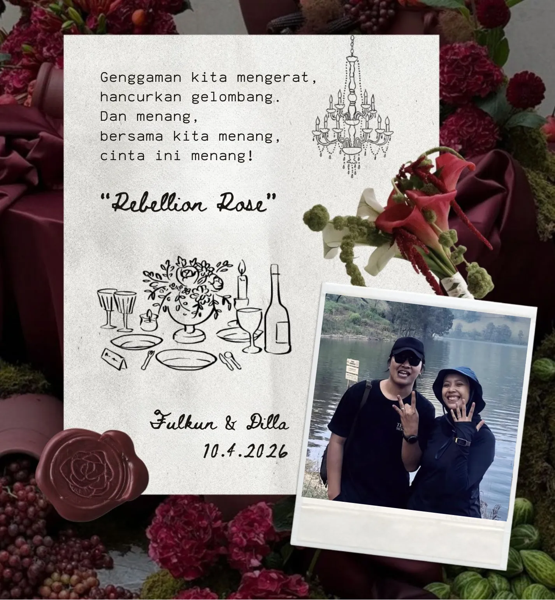
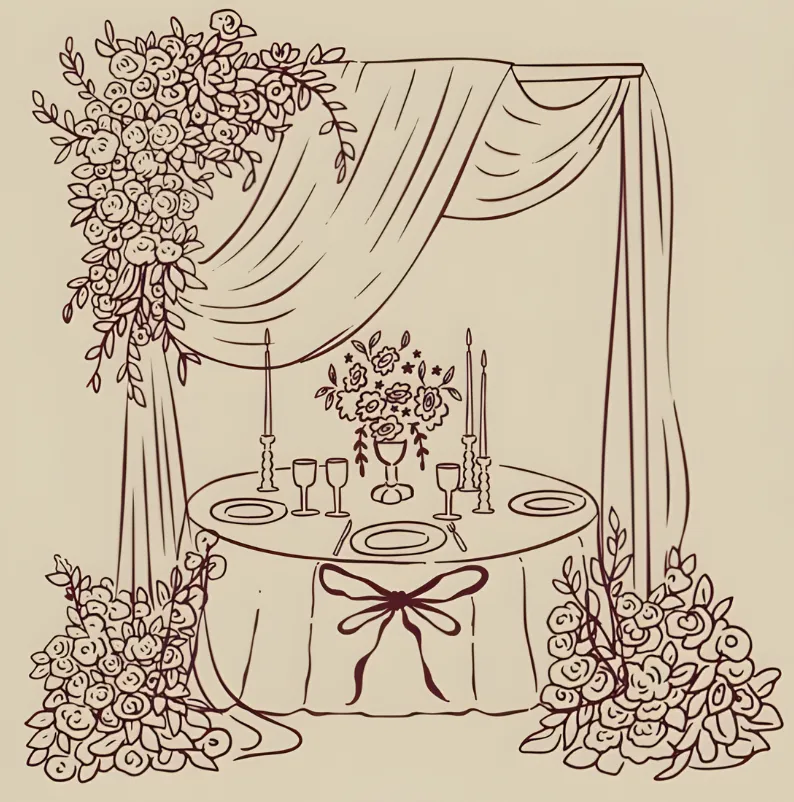
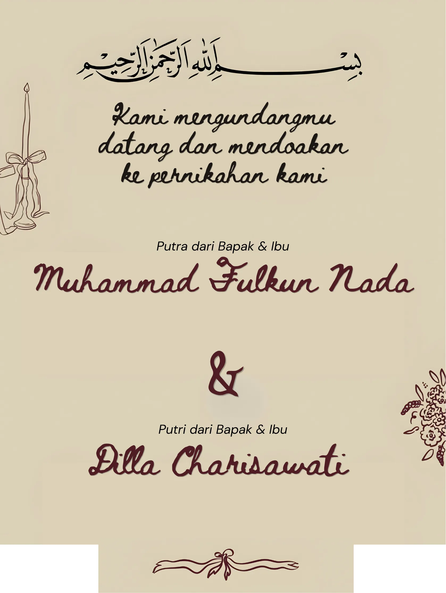
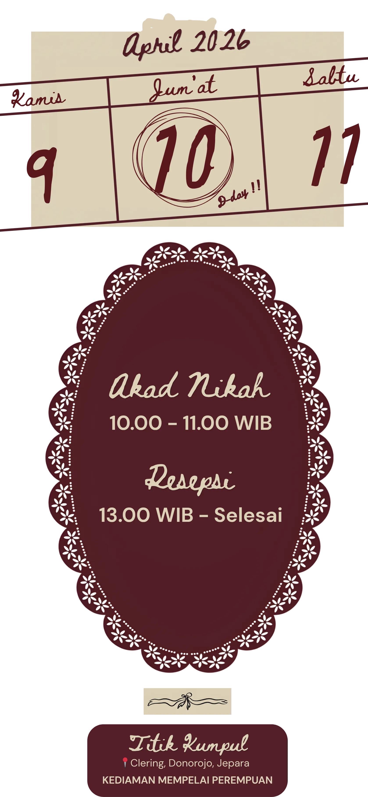
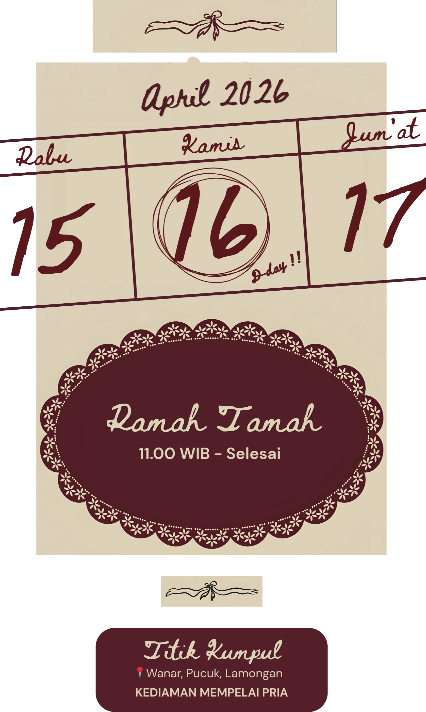
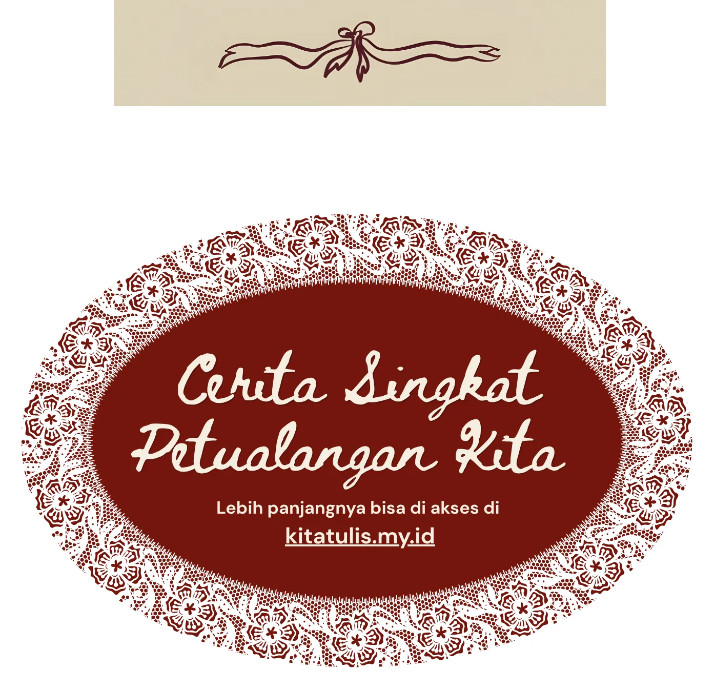
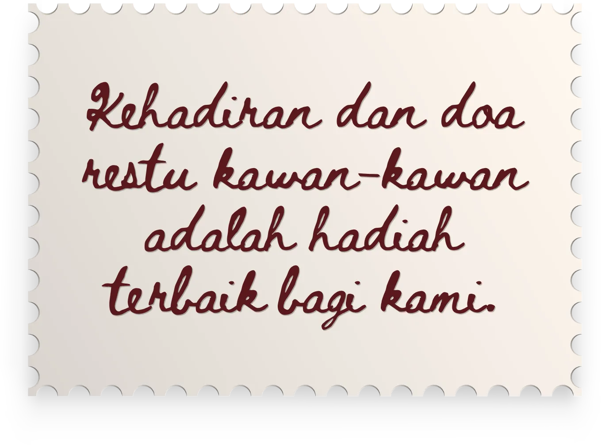

Di hari bahagia kita, yang penuh doa dan cinta ini 🤟
Yang jauh kalo bisa ya datang kami akan sangat senang, pastinya! Kalo belom bisa cukup doakan
saja yg terbaik buat kita.
Kalo yg dekat, masa iya gak datang hmmm.. masa nunggu king emyu juara si duuuh.
ini kita lagi juara dan merayakan
kememanangan.

fulkunada dillacharisaa


Pertemuan pertama kami di EECC pare kediri. Dalam banyaknya yang mendaftar kursus waktu itu, kami dikelompokkan dalam satu team atau satu kelas yang sama. Seiring waktu berjalan, kami saling mengenal, saling interaksi & sesekali makan bersama di warung depan tempat kursus. Sampai pada saat farewell party, kami berpisah. Kami pulang melanjutkan petualangan kehidupan masing masing.
Diselang waktu setelah pertemuan kami di pare 2015, kami hanya sesekali berkabar lewat udara dan sesekali bertemu. Banyak kesamaan pada prinsip hidup dan hoby, kegiatan dialam bebas salah satunya, tak sedikit juga perbedaan diantara kita. Dan akhirnya kita sepakat untuk menjalin hubungan yang lebih serius (taaruf dalam Bahasa agama) dan saling meyakinkan untuk mengambil Keputusan untuk menjadi team (pacaran).
Setelah perjalanan panjang kita selama kurang lebih 4 tahun menjalin hubungan, kita mencoba saling mengenal, saling memahami, saling mengisi kekurangan dan yang paling penting kita selalu upgrade rumus strategi untuk menghadapi situasi setelah menikah dan akhirnya kita bertunangan.
Setelah banyaknya eksperimen konflik, naik turunnya keyakinan. Kita Kembali lagi di rumus strategi paling basic dalam prinsip hubungan kita, yakni “saling” dalam peristiwa dan kondisi apapun. Akhirnya kita memilih untuk berlayar dipetulangan hidup level selanjutnya.
Tulis harapan dan
doa
untuk kita berdua
Kado Pernikahan

Tidak mencantumkan nomor rekening seperti undangan digital pada umumnya, tapi kalo kamu masih maksa
WA saja ya pren..
(emot terharu karena pasti kamu gabisa hadir)
Bukan materi yang kita harapkan, tapi kehadiran di hari Bahagia kami. Kalo belom ada waktu, doakan saja kami berdua dilancarkan dalam segala urusan kehidupan.
Fulkun & Dilla
#FulkunDillaWedding